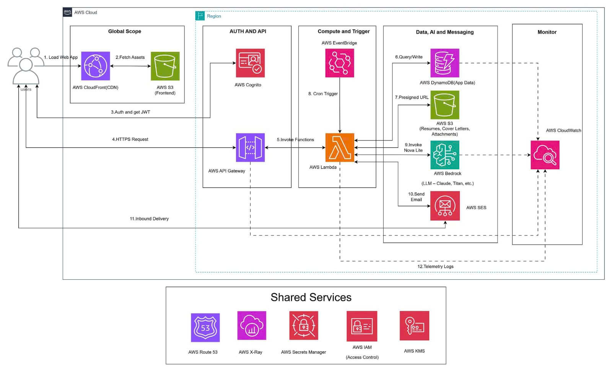
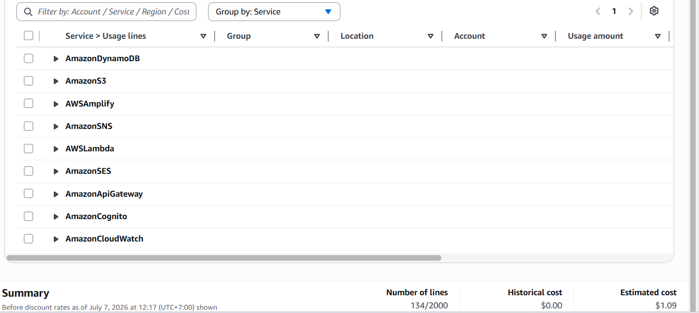

SmartCV là nền tảng theo dõi đơn ứng tuyển việc làm được hỗ trợ bởi trí tuệ nhân tạo, xây dựng hoàn toàn trên AWS với kiến trúc serverless. Ứng dụng cho phép người dùng ghi lại toàn bộ quá trình ứng tuyển, phân tích dữ liệu để phát hiện xu hướng (phiên bản hồ sơ nào có tỉ lệ phản hồi cao nhất, kênh nào hiệu quả nhất, quy mô công ty nào phù hợp), và nhận huấn luyện cá nhân hóa từ Amazon Bedrock thông qua giao diện chat. Hệ thống cũng gửi email nhắc nhở hàng ngày và bản tóm tắt hàng tuần có chứa gợi ý của AI.
Vấn đề hiện tại
Người tìm việc thường theo dõi ứng tuyển bằng bảng tính hoặc ghi chú tản mạn, không có phân tích hệ thống. Họ không biết phiên bản hồ sơ nào hiệu quả, kênh nào mang lại phỏng vấn nhiều hơn, hay họ đã bỏ lỡ bao nhiêu cơ hội vì không follow-up đúng hạn. Các công cụ bên thứ ba như LinkedIn hoặc các ATS tracker thường phức tạp, tốn kém hoặc không cung cấp phân tích cá nhân hóa.
Giải pháp
SmartCV sử dụng AWS DynamoDB để lưu trữ dữ liệu ứng tuyển, AWS Lambda & API Gateway làm backend serverless, Amazon Cognito để xác thực người dùng, Amazon S3 để lưu trữ hồ sơ PDF, Amazon Bedrock (Nova Lite) để cung cấp AI coaching qua chat, và Amazon SES để gửi email tự động. Frontend được xây dựng bằng React + Vite, triển khai qua AWS Amplify/GitHub Pages. Toàn bộ hạ tầng được định nghĩa bằng AWS CDK (Infrastructure as Code).
Lợi ích cốt lõi:
Tối ưu thời gian: Giảm 80% thời gian quản lý hồ sơ thủ công so với Excel nhờ tự động hóa.
Tăng tỉ lệ thành công: Phân tích dữ liệu từ AI giúp nhận diện “điểm nghẽn” hồ sơ và tính năng nhắc nhở (follow-up) đảm bảo không bỏ lỡ cơ hội phỏng vấn.
Cá nhân hóa: AI Coaching từ Bedrock cung cấp chiến lược ứng tuyển chuyên sâu cho từng người dùng.
Phân tích ROI:
Chi phí cực thấp: Tận dụng AWS Free Tier, chi phí vận hành chỉ ~$0.20 – $0.50/tháng.
Giá trị hoàn vốn: Chỉ cần tiết kiệm 2 giờ/tuần.Chi phí vận hành thấp tiết kiệm ngân sách.
Giá trị cơ hội: Rút ngắn đáng kể thời gian tìm việc, mang lại lợi ích tài chính lớn từ việc có thu nhập sớm hơn dự kiến.
Kiến trúc SmartCV được xây dựng theo mô hình Serverless tối ưu trên AWS, giúp đảm bảo khả năng mở rộng tự động với chi phí thấp. Hệ thống sử dụng React và Vite cho giao diện Frontend, được triển khai trực tiếp qua AWS Amplify – dịch vụ này tích hợp sẵn Amazon CloudFront để phân phối nội dung toàn cầu. Backend được thiết kế với API Gateway kết nối tới các hàm xử lý logic tại AWS Lambda, sử dụng Amazon DynamoDB để lưu trữ dữ liệu ứng tuyển và Amazon S3 cho việc quản lý hồ sơ PDF. Tính năng tư vấn AI (AI Coaching) được tích hợp thông qua Amazon Bedrock, trong khi Amazon SES đảm nhận vai trò gửi email nhắc nhở và báo cáo định kỳ. Toàn bộ hạ tầng được quản lý bằng mã nguồn (IaC) thông qua AWS CDK và quy trình CI/CD tự động.

Thiết kế thành phần
applications: CRUD đơn ứng tuyển, lọc/tìm kiếm.insights: Tính toán patterns, tỉ lệ phản hồi, gọi Bedrock cho AI chat.settings: Quản lý mục tiêu hàng tuần và streak.notes: Ghi chú có timeline theo từng đơn ứng tuyển.followup: Quét DynamoDB mỗi ngày, gửi SES email nhắc nhở.digest: Tổng hợp dữ liệu tuần, gọi Bedrock tạo gợi ý, gửi email digest.userId. Amazon S3 lưu trữ hồ sơ PDF do người dùng tải lên.Các giai đoạn triển khai Dự án gồm 2 phần — xây dựng backend AWS và phát triển frontend React — mỗi phần trải qua 4 giai đoạn:
userId.followup hàng ngày (07:00 UTC) và Lambda digest hàng tuần (Chủ nhật 08:00 UTC).Thời gian thực tập (Tháng 4 – Tháng 7/2026): 12 tuần
| Giai đoạn | Nội dung thực hiện |
|---|---|
| (Tuần 1–2) | Làm quen với AWS và các dịch vụ cốt lõi (IAM, S3, Lambda, API Gateway, DynamoDB, Cognito, CloudWatch, Bedrock). Nghiên cứu kiến trúc Serverless, chuẩn bị môi trường phát triển, nâng cấp phần cứng và cài đặt các công cụ phục vụ dự án. |
| (Tuần 3–6) | Phân tích yêu cầu hệ thống, thiết kế kiến trúc AWS, xây dựng sơ đồ kiến trúc, thiết kế cơ sở dữ liệu DynamoDB (Single-Table Design), lựa chọn công nghệ, xây dựng Infrastructure as Code bằng AWS CDK và điều chỉnh kiến trúc theo góp ý của nhóm hướng dẫn. |
| (Tuần 7–10) | Triển khai hạ tầng AWS Serverless, phát triển Backend với Lambda, API Gateway, Cognito và DynamoDB; tích hợp Amazon Bedrock để phân tích CV bằng AI; phát triển giao diện React, kết nối Frontend với Backend, kiểm thử các chức năng và tối ưu hiệu năng hệ thống. |
| (Tuần 11–12) | Hoàn thiện toàn bộ dự án, triển khai ứng dụng lên AWS , kiểm thử tổng thể, sửa lỗi, tối ưu trải nghiệm người dùng, hoàn thiện tài liệu kỹ thuật, chuẩn bị báo cáo thực tập và demo hệ thống trên môi trường thực tế. |
| Sau khi triển khai | Tiếp tục nghiên cứu và phát triển, bổ sung các tính năng AI nâng cao, tối ưu chi phí AWS, cải thiện hiệu năng, tăng cường bảo mật và mở rộng hệ thống để phục vụ nhiều người dùng hơn. |

Chi phí phát triển: Không phát sinh — toàn bộ 4 thành viên sử dụng AWS Free Tier và môi trường dev local.
| Rủi ro | Mức độ | Xác suất | Giải pháp |
|---|---|---|---|
| Bedrock không khả dụng tại region | Cao | Trung bình | Dùng Nova Lite (không bị geo-restrict); có fallback rule-based coaching |
| Vượt ngân sách Bedrock | Trung bình | Thấp | Đặt AWS Budget Alert; giới hạn maxTokens mỗi lần gọi |
| SES email vào spam | Trung bình | Trung bình | Xin SES production access; cấu hình SPF/DKIM |
| Lỗ hổng bảo mật API | Cao | Thấp | Mọi endpoint yêu cầu Cognito JWT; validate input đầy đủ |
| DynamoDB hot partition | Thấp | Thấp | Partition key theo userId; dùng on-demand capacity mode |
Cải tiến kỹ thuật: Người dùng có đầy đủ dữ liệu và phân tích để ra quyết định chiến lược trong hành trình tìm việc, thay thế hoàn toàn quy trình theo dõi thủ công bằng Excel.
Giá trị dài hạn: Dữ liệu tích lũy theo thời gian giúp AI coaching ngày càng chính xác hơn. Kiến trúc serverless có thể mở rộng dễ dàng để phục vụ nhiều người dùng hơn trong tương lai.